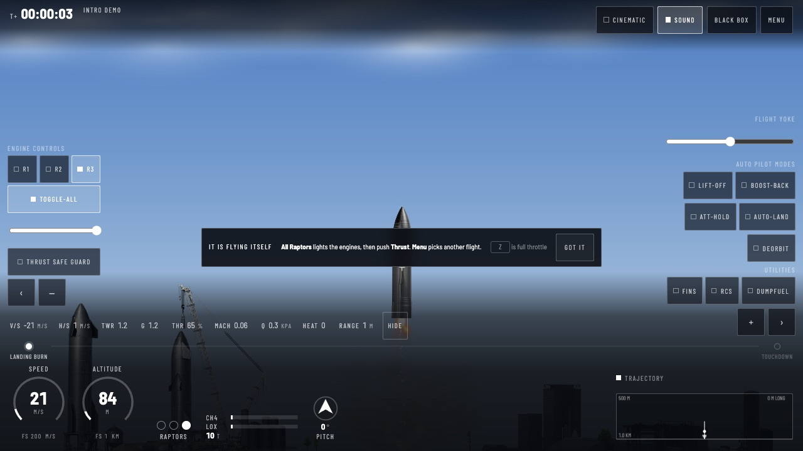
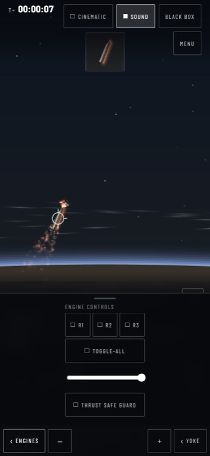
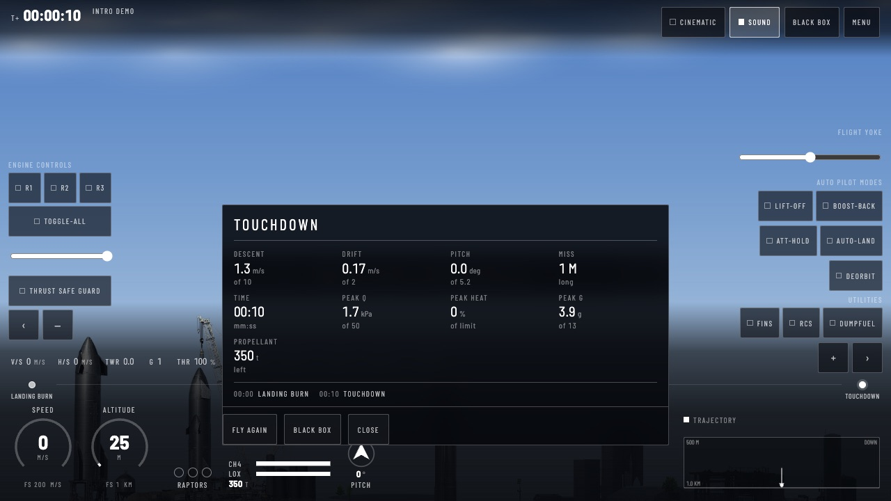
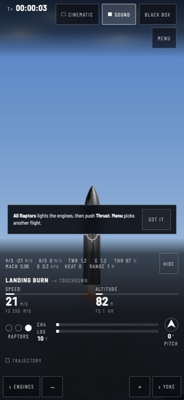

Each surface shows the shipped build on the left and the proposal on the right, drawn over a real frame from the game. The proposals follow docs/design/design-system.md (flight_sim's monochrome language with a Starship brand layer) and docs/design/ia.md. They are static mocks for direction: the React port builds them for real. Numbers in the mocks are illustrative, not a live flight.
Today thirty controls share one weight and the number that decides a landing, vertical speed, is the smallest on screen. Proposed: one primary cluster, controls grouped by use and named in a player's words, and a landing cue that appears only below 2 km.

Altitude, vertical speed and speed are the largest type on screen, side by side, with units that never move.
The throttle shows its own value; with the engines off it says Off instead of 100 %, and each engine dot shows lit, igniting, failed or off.
The landing cue, heating and max-Q appear only when they matter, in caution style with a word, never by colour alone.
Today opening Engines covers speed, altitude and vertical speed, exactly when the player needs them, and the top bar wraps to two rows. Proposed: one status row, a flight-data strip no sheet can cover, the sheet beneath it.

Today the strongest surface, judging each figure against its limit, but it covers the controls, has no grade and no comparison. Proposed: beside the vehicle, a heading that says what happened, a grade, the change since the last attempt, and one thing to try next.

Today a card over the vehicle names "All Raptors" and "Thrust", which are not on screen. Proposed: after the intro lands, four steps on the pad, each pointing at the control it names, skippable at every step.
